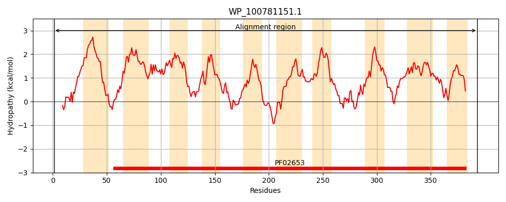
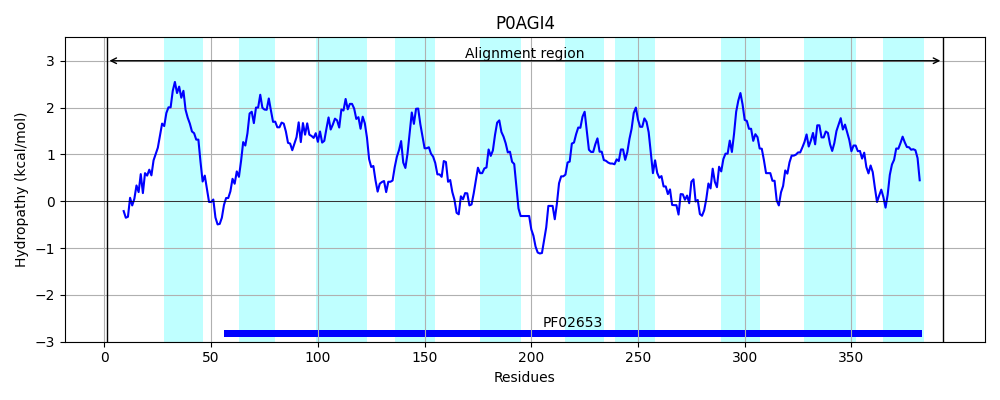
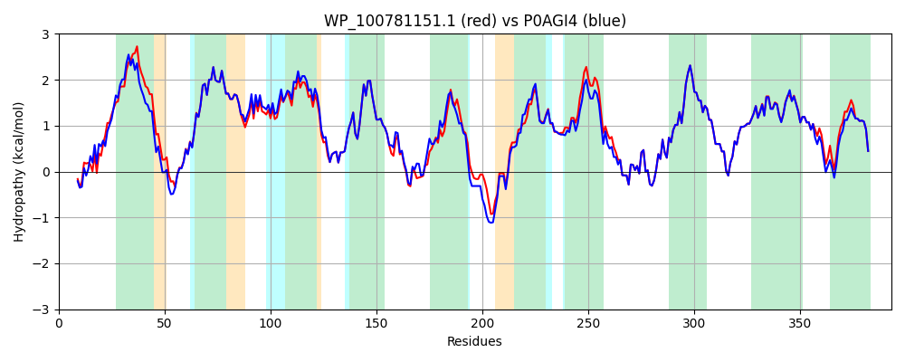

Hit Accession: P0AGI4
Hit TCID: 3.A.1.2.4
Hit Description: gnl|BL_ORD_ID|8866 gnl|TC-DB|P0AGI4|3.A.1.2.4 Xylose transport system permease protein xylH - Escherichia coli.
Mach Len: 393
e:0.000000
Query TMS Count : 10
Hit TMS Count: 10
TMS-Overlap Score: 9.350000
Predicted Substrates:CHEBI:10085;xylose
BLAST Alignment:
Score: 1720 , Bit scores: 667 bits, E-value: 0.0e+00, Alignment length: 393, Percentage identity: 87
Query: 1 MSKNTSSEIKLTPTAPAALPALKGPNLQVFVMIAAIVVIMLFFTWVTDGAYLSARNISNLLRQTAITGILAVGMVFVIISAEIDLSVGSMMGLLGGAAAIFDVWLGWPLPLTILVTLVMGLLLGAWNGWWVAYRKVPSFIVTLAGMLAFRGILIGITNGTTVSPTSPAMAQIGQSYLPDGIGFGIGVVGMAAFIVWQWRGRMRRQALGLATSSSTAAVGRQAITAVIVLGAIWLLNDYRGVPTPVLILAALLLAGLFMATRTAFGRRIYAIGGNLEAARLSGINVERTKLAVFAINGLMVAIAGLILSSRLGAGSPSAGNIAELDAIAACVIGGTSLAGGIGSVAGAVMGAFIMSALDNGMSMMDVATFWQYIVKGAILLLAVWMDSATKRRA 393
MSK+ SE+KL LK NLQVFVMIAAI+ IMLFFTW TDGAYLSARN+SNLLRQTAITGILAVGMVFVIISAEIDLSVGSMMGLLGG AAI DVWLGWPLPLTI+VTLV+GLLLGAWNGWWVAYRKVPSFIVTLAGMLAFRGILIGITNGTTVSPTS AM+QIGQSYLP GF IG +G+ AF+ WQWRGRMRRQALGL + +STA VGRQA+TA+IVLGAIWLLNDYRGVPTPVL+L LLL G+FMATRTAFGRRIYAIGGNLEAARLSGINVERTKLAVFAINGLMVAIAGLILSSRLGAGSPSAGNIAELDAIAACVIGGTSLAGG+GSVAGAVMGAFIM++LDNGMSMMDV TFWQYIVKGAILLLAVWMDSATKRR+
Sbjct: 1 MSKSNPSEVKLAVPTSGGFSGLKSLNLQVFVMIAAIIAIMLFFTWTTDGAYLSARNVSNLLRQTAITGILAVGMVFVIISAEIDLSVGSMMGLLGGVAAICDVWLGWPLPLTIIVTLVLGLLLGAWNGWWVAYRKVPSFIVTLAGMLAFRGILIGITNGTTVSPTSAAMSQIGQSYLPASTGFIIGALGLMAFVGWQWRGRMRRQALGLQSPASTAVVGRQALTAIIVLGAIWLLNDYRGVPTPVLLLTLLLLGGMFMATRTAFGRRIYAIGGNLEAARLSGINVERTKLAVFAINGLMVAIAGLILSSRLGAGSPSAGNIAELDAIAACVIGGTSLAGGVGSVAGAVMGAFIMASLDNGMSMMDVPTFWQYIVKGAILLLAVWMDSATKRRS 393 | Protein Hydropathy Plots: |
|---|
|  |  |
Pairwise Alignment-Hydropathy Plot:
|
|---|
|  |